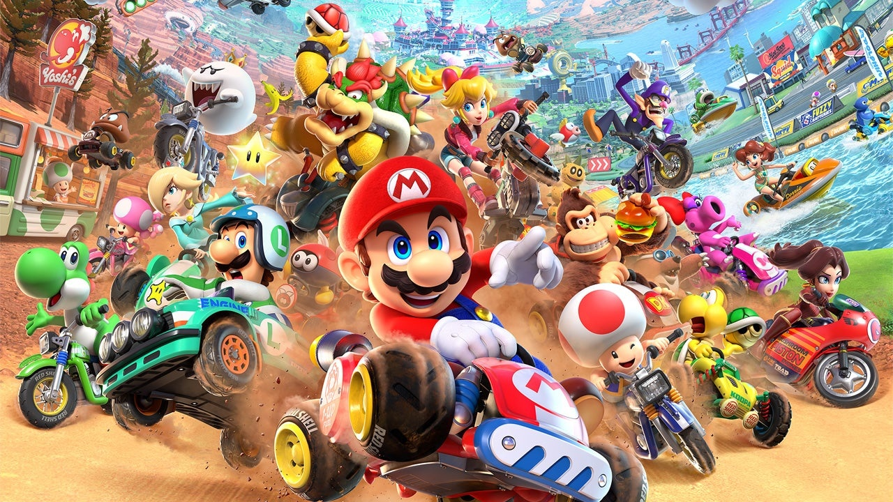
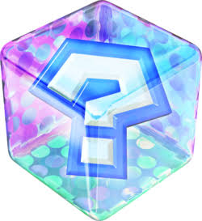
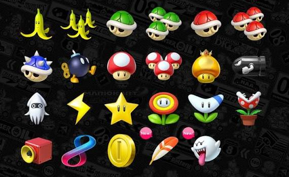

O primeiro jogo da série, Super Mario Kart, foi lançado em 1992 para o Super Nintendo Entertainment System e é considerado um dos jogos mais influentes da história, e seguramente a maior referência em termos de spin-off. A série Mario Kart totaliza dezessete jogos, sendo oito para consolas domésticas, três para consolas portáteis, cinco jogos de arcade desenvolvidos em parceria com a Namco e um para telefones. Mais de 189 milhões de cópias da série foram vendidas pelo mundo todo. O mais novo título, Mario Kart World, foi lançado para Nintendo Switch 2 em 5 de junho de 2025.
Mario Kart é um jogo de corridas. Dentro do jogo existem varias pistas diferentes, cada uma com um nome e estilo proprio, o que captiva varios jogadores. Tambem apresenta uma diversa variadade de personagens e automoveis, ambos carros e motas, com que uma pessoa pode jogar. Os designs e nomes criativos e originais dos automoveis, personagens e pistas sao uma grande parte do jogo pois sao o que torna os jogadores ansiosos para correrem. Durante as corridas, os jogadores tem muito mais para fazer do que simplesmente guiar. Ao longo da pista sao postas umas caixas misterio flutuantes que dao aos corredores uns poderes especiais que os ajudam a avancar na corrida. Tambem e importante prestar atencao as curvas e rampas, usando drifts e kickjumps para executar estes mais rapido. O vencedor, o jogador que pontua melhor numa ronda de quatro corridas, recebe uma taca e moedas que lhe permite desbloquear novos automoveis e personagens.
 |
 |
As caixinhas oferecem poderes de ataque, defesa e velocidade. Os diferentes simbolos apresentam poderes diferentes:
Usadas para derrobar jogadores. A vermelha e atirada ao jogador diretamente a sua frente, a verde e atirada manualmente e pode nao calhar em ninguem e a azul e atirada ao jogador que esta em primeiro lugar. Podem servir como escudo a outras carapacas.
Usadas para fazer com que os jogadores escorreguem. Sao colocadas no chao e quem for contra elas, escorrega momentariamente. Tambem podem ser usadas como escudos a carapacas.
Ao ingerilos o jogador recebe um boost que o permite guiar mais rapido. Os vermelhos dao 1 unico boost enquanto que o dourado da multiplos boost durante um certo periodo de tempo.
Esta e atirada e explode, afetando qualquer jogador aos arredores da bomba.
Usada para tornar o seu jogador numa bala que passa por cima dos jogadores e da um boost, durante um certo tempo.
Derruba tinta sobre os olhos dos outros jogadores, limitando a sua visao da pista durante um certo tempo
Usado para transformar todos os outros jogadores em miniatura e destruindo qualquer poder especial que estes tivessem equipado.
Esta torna o jogador invencivel durante um certo tempo/
A flor laranja dispara bolas de fogo que atingem os outros jogadores e a flor vermelha da pequenos boosts ao jogador e come qualquer jogador a sua volta
Este e exatamente o seu nome, um boomerang. Pode ser usado apenas 3 vezes
Esta afasta e atinge qualquer jogador a sua volta. Pode ser usado como escudo para as carapacas e e a unica coisa que consegue travar uma carapaca azul.
Da a um jogador todos os poderes, podendo usa los ao mesmo tempo
O jogador recebe uma moeda
O jogador da um grande salto, que o pode permitir de se desviar de poderes de ataque
Este fantasma e usado para roubar o poder especial de outro jogador. E tambem uma personagem do jogo chamado Boo. Ao ativado, o jogador torna se tambem invisivel e nao pode ser atingido por carapacas vermelhas.